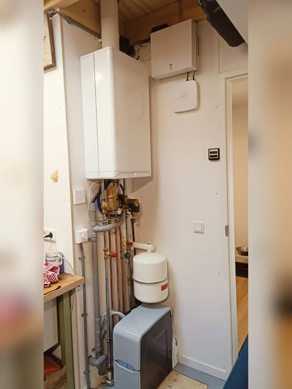
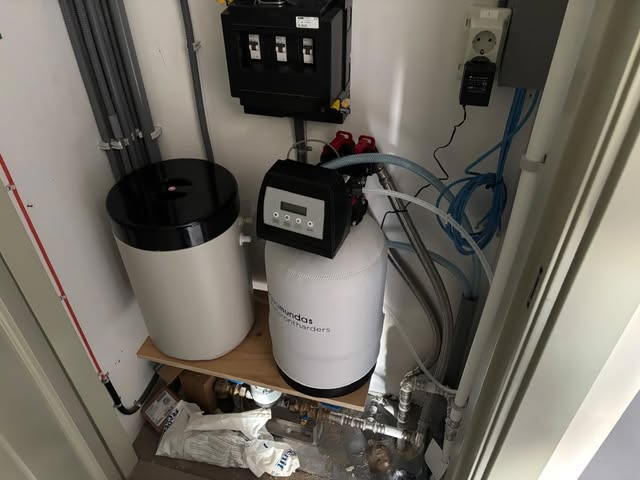
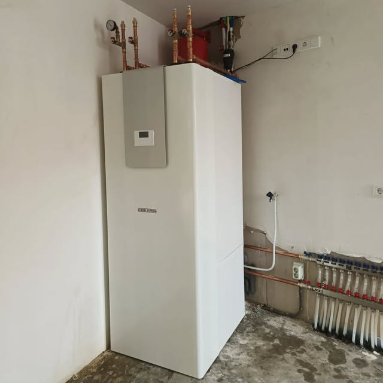
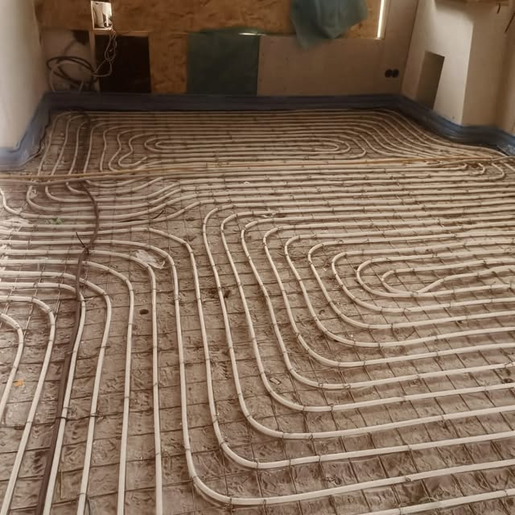

Een cv-installatie in beeld
Een cv-ketel met leidingwerk. Baver deelt het resultaat van deze installatie op Instagram.
Naar het oorspronkelijke projectEchte installaties. Echt werk van Baver. Van cv-installaties tot waterontharders en vloerverwarming.
4 projecten getoond

Een cv-ketel met leidingwerk. Baver deelt het resultaat van deze installatie op Instagram.
Naar het oorspronkelijke project
Een waterontharder met bijbehorende installatie. Bekijk de oorspronkelijke projectfoto van Baver.
Naar het oorspronkelijke project
Installatiewerk met apparatuur van Stiebel Eltron. Meer beelden staan in het oorspronkelijke bericht.
Naar het oorspronkelijke project
Vloerverwarmingsleidingen aangelegd in een ruimte in aanbouw. Bekijk het project op Instagram.
Naar het oorspronkelijke projectVertel Bart wat u wilt laten uitvoeren.